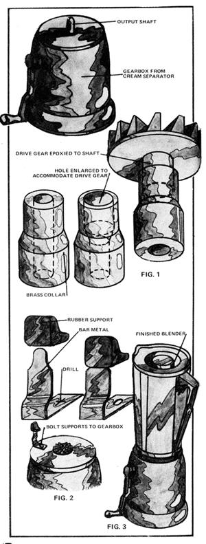

Pete Rodriguez here at Amazing Grace in Virginia. Just thought I'd send MOTHER a little brainstorm I had.
We live without electricity. Generally it's not extremely inconvenient, and we sure like not paying those bills and (in theory) doing our bit for coal-pollution-free air and land. All the same, my old lady really missed her blender. They're great little items very versatile and actually about the only way to make homemade mayonnaise. Strong right arm notwithstanding, that's one item which is no fun to whip up by hand. Besides, the poor woman had just used up all her Green Stamps for a new Waring when we moved here, and it was sitting idle. Frustrating.
Now comes the brainstorm. I'd bought a hand-cranked tabletop cream separator 'at an auction for $2.00. Unfortunately, the machine's parts had been stored much too near some chemical fertilizer which had corroded them unmercifully. You could still turn the crank, though, and the little shaft inside the gadget would spin like crazy. I counted its revolutions and discovered that the gear ratio was - roughly 164 to 1. Hmmm.
The upshot was that I robbed the blender of its support bumpers and drive gear. The motor and controls went to a neighbor who has electricity and while I was over at his place I borrowed his power drill and opened the end of the separator's output shaft as in Fig. 1, so that the drive gear from the blender would fit down into it. (I had to be careful to get the centering right.) Then I took the hybrid home and glued it tight with epoxy.
While the glue was setting, I scrounged up four identical pieces of bar metal (ex-curtain rod holders), flattened them out, and bent them as shown in Fig. 2 so that they were just long enough to hold the pitcher at the height of the drive gear. Fine but how to attach the rubber cushions to the bars? 1 tried glue, with no luck. What did work was to heat each metal clamp pretty hot with a propane torch, push a bumper down onto it until the bar was about an eighth of an inch from coming out at the top, and let the finished gizmo cool. (See Fig. 2.) 1 had to bend the supports around a bit so they held the container level and when they finally did, I celebrated by painting the gearbox bright red.
Fig. 3 shows the finished blender. The four bolts that fasten the top to the gearbox also hold down the bars that support the pitcher. The container sits there firmly and when you crank she spins like mad. Works like a charm. We make homemade mayonnaise, peanut butter, and pureed whatever, and it's wonderful. Just wish I hadn't had to use that electric drill to make it, though.
|
 |
|
|